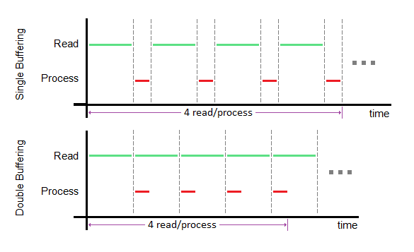

In the previous lecture, we completed the basic word count (wc) program designed to give the user the number of words in a file upon turning on the computer. However, the wc program has not been optimized, and it currently repeats the following instructions until the overall task is complete:
To improve the performance of the application, we will consider several options to improve the speed of the process in this lecture.
Originally, the program cannot begin processing data until the necessary data is read from the disk into the buffer and cannot continue reading data until the data in the buffer is completely processed. Double buffering is a technique that allows the application to read in data from the disk (via the disk controller) while processing the data in the buffer (RAM). After the first read, the application can process the data currently in the buffer while reading the data in the disk into a separate buffer. To maximize efficiency of double buffering, the read and process times should be as similar as possible; if the two times are equal, then the speed of the program can be halved. The following diagrams – under the assumption that reading data from the disk takes longer than processing the data – illustrate the difference between the original program with and without double buffering:
With double buffering, we can decrease the time it takes the program to complete; however, we have only considered adding a buffer. What effect would increasing the buffer length have on the performance of the program? Well, we originally read in only the bits we need from the disk, which may not necessarily be continuous on the disk. We can make use of a larger buffer size by reading all the bits between those that we need immediately to reduce Rotational latency (caused by waiting for the bits on the disk that we need to rotate to the read head).
If we recall from the previous lecture, the CPU will ask for data from the disk via the disk controller and then immediately transfer the data into in the buffer (this process is called
programmed I/O
or PIO). For example, insl is one such command that requires the data be passed through the CPU during its journey from the disk to RAM. In contrast, we can use another technique known as
direct memory access
(DMA) to remove the CPU as the middleman. In DMA, the CPU will schedule the disk controller to grab the desired data from the disk and then pass the data through the bus and into the RAM. Afterwards, the CPU can query the disk about the status of the data buffering and carry on with its tasks once the necessary data has been properly stored. The following diagrams contrast PIO and DMA:
Modularity describes the extent of a partition on a system into smaller components, which can interact with each other to perform the functionalities of the original system. If modularity breaks a system into smaller components that – in the end – accomplish the same tasks, why would we need to spend the effort to modularize our systems? Well, modularity comes with some benefits, one of which is reducing debugging time. Since the moth in the machine, debugging has been a critical issue that programmers around the world have had to face, and many spend much of their time trying to remove issues or “bugs” from their code. We will illustrate how modularity can help reduce the time it takes to reduce to debug a block of code.
In order to simplify the illustration, we're assuming several facts:
For the initial case (K = 1), the code is implemented without modularity, the time it takes to debug the block of code is proportional to N^2. However, as K increases, the time it takes to debug is proportional to the product of:
Thus, the total time it takes to debug is proportional to N^2/K, which a factor of K smaller than the original time. Unfortunately, there are many complications to the debugging beyond the fact that the initial assumptions on proportionalities are underestimating the time it takes to debug a number of lines of code. These complications include:
Nevertheless, this simplified example gives insight on how modularity can hasten the debugging process.
In order to measure the effectiveness of modularity on a system – or, in our case, a wc program – we define metrics to describe how well modular boundaries provide interaction between the environment and module itself (known as abstraction ):
To demonstrate the effect of metrics on how we define our modular parts, let’s look at an integral function for the BIOS, the boot loader, and our wc program: read_ide_sector. Ideally, we would like to make one function to satisfy the needs of the all three programs. There are several approaches we can take to modularize the read_ide_sector function.
The starting function takes two parameters – the sector number (int type) and the starting address (int type) of the buffer – and returns nothing (void type):
void read_ide_sector(int s, int a);
To improve, let’s allow the caller to specify the number of disks to read. Based on metrics, this would make the function (module) more complicated but also more flexible.
void read_sector(int disknum, int s, int a);
But, what happens if the read_sector fails to read properly? To solve this, we can have the function return an integer indicating how many sectors the function read, or a negative number to indicate it failed to read properly/anything. Also, let’s allow the caller to specify the number of sectors it wants to read from the disk.
int read_sector(int disknum, int s, int a, int nsecs);
Up to this point, we have been assuming the size of a sector. In order to be compatible with different disks, we should instead specify how many bytes we want from the disk. So, we change the sector number and number of sectors parameters into their byte counterparts.
int read_bytes(int disknum, int byteoffset, int a, int nbytes);
ssize_t read(int fd, void *a, size_t nbytes);
Comparing the read_bytes function to the read function (standard C function), we can see several similarities. Both function return signed integers meant to signify the number of bytes read (or to account for error). Parameter wise:
You don’t. Although it sounds absurd, code without modularity has its own set of benefits and consequences that may suit your needs:
Functions and function calls: We can divide a singular ‘main’ function into different functions that, if necessary, can be called again later in the program. Because the functions (lines of code) will remain the same during the program run-time, we can store the code instructions and constant variables from the disk into the same area of RAM. Furthermore, a majority of the remaining RAM will be used to store function calls and local variables. As more functions are called, they and their local variables are stored in smaller memory addresses (which is why we call the portion of RAM storing these function calls the ‘stack’). By implementing the memory as such, we create a caller-callee relationship in stack, where one function (caller) will call another function (callee), which – after completing its instructions – can return the program to the caller function (Note: recalling from CS33, the ‘call’ and ‘ret’ commands facilitate the movement of the stack and instruction pointers as well as the value of the return register [generally eax]). While functions provide a degree of modularity, they also come with a few issues, particularly regarding the caller-callee system:
In essence, functions require that there be an agreement amongst themselves to pass correct arguments, return to callers properly, and not tamper with the caller’s variables. We call this soft modularity because every module must work properly in order for the entire application to work. Like a structure made of toothpicks, the entire system will crash if a single module is amiss.
To illustrate functions and function calls, let’s look at a simple recursive function – fact – that computes the factorial of n:
int fact(int n) {
return n ? n * fact(n-1) : 1;
}Already, there’s a glaring error: if n is negative, the function will recursively call until the stack attempts to alter read-only memory, resulting in a system crash / undefined behavior. Here’s an improved version:
int fact_improved(int n) {
if(n < 0) return 0;
return n ? n * fact(n-1) : 1;
}caller:
…
call fact % pushes the address of the next instruction onto the stack
% jmp to the address specified by fact
…
…
fact:
pushl %ebp % push base ptr onto the stack
movl $1, %eax % move 1 into eax register
movl %esp, %ebp % move old stack ptr into the base ptr
subl $8, %esp % moves the stack ptr 8 bytes down (grows substack by 8)
movl %ebx, -4(%ebp) % saves the value in ebx in the 4-byte memory directly below the ebp ptr (callee save protocol)
movl 8(%ebp), %ebx % moves the parameter n from the caller into the ebx register
testl %ebx, %ebx % checks if n is 0 (computes %ebx & %ebx)
jne .L5 % if n != 0, jump to label .L5
.L1:
movl -4(%ebp), %ebx % moves the old value (saved earlier) back into the ebx register
movl %ebp, $esp % moves the stack ptr to point at the old ebp
popl %ebp % pops the value at the address pointed at by ebp into ebp and adds 4 to esp
% ^^(effectively, ebp points back to the previous caller’s substack’s base and esp now points at the ret addr to the next instr of the caller)
ret % pops the return address into the eip register, adds 4 to esp
.L5:
leal -1(%ebx), %eax % address arithmetic: stores n-1 into eax
movl %eax, (%esp) % stores argument (n-1) in preparation for function call
call fact % creates another substack
imull %ebx, %eax % stores the product of the values in ebx and eax in eax
jmp .L1 % jumps to label .L1As we mentioned before, there are issues in the caller-callee protocol. In assembly code, these issues might manifest in a form similar to the following:
movl %esp, 100(%esp) % callee changes caller’s code.L2:
jmp .L2 % infinite loopTo ensure that our modules are airtight, we will use hard modularity. There are two major ways to implement hard modularity.
1) Multiple machines: by using multiple machines (and relaying data using message passing), we can avoid our machine from crashing by letting another machine run the code. Should the code result in undefined behavior or crash the computer, our machine will still be safe and can continue to run instructions.
2) The other method is to use virtualization, where we implement the hardware/firmware of an operating system within a machine. The virtual machine (VM) will be able to perform most of the functionalities of a regular system on top of the computing architecture of the machine running the VM.
We will continue our discussion of virtualization in the next lecture.
To see the content in a .docx file, click
here
Go to Top